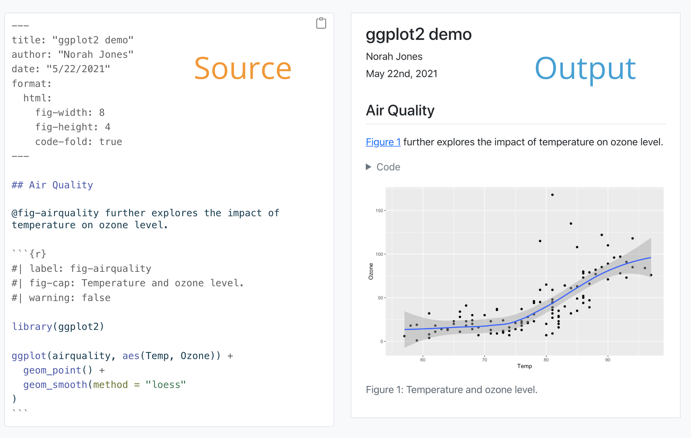
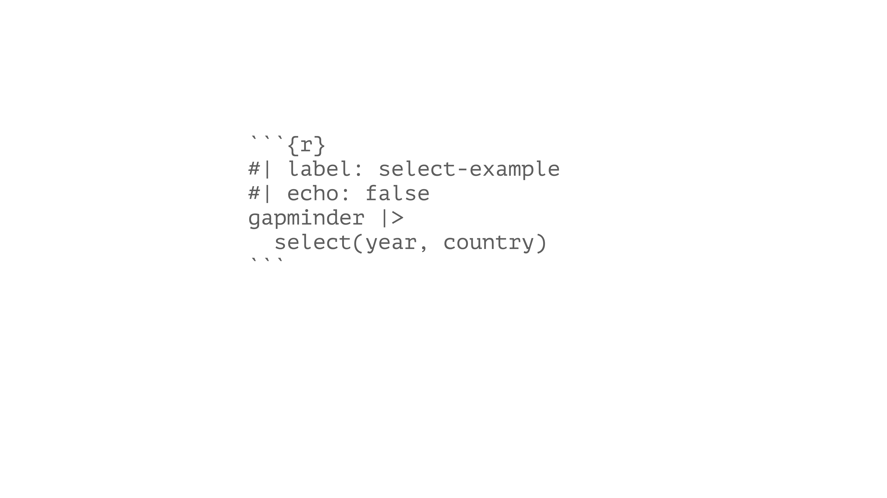
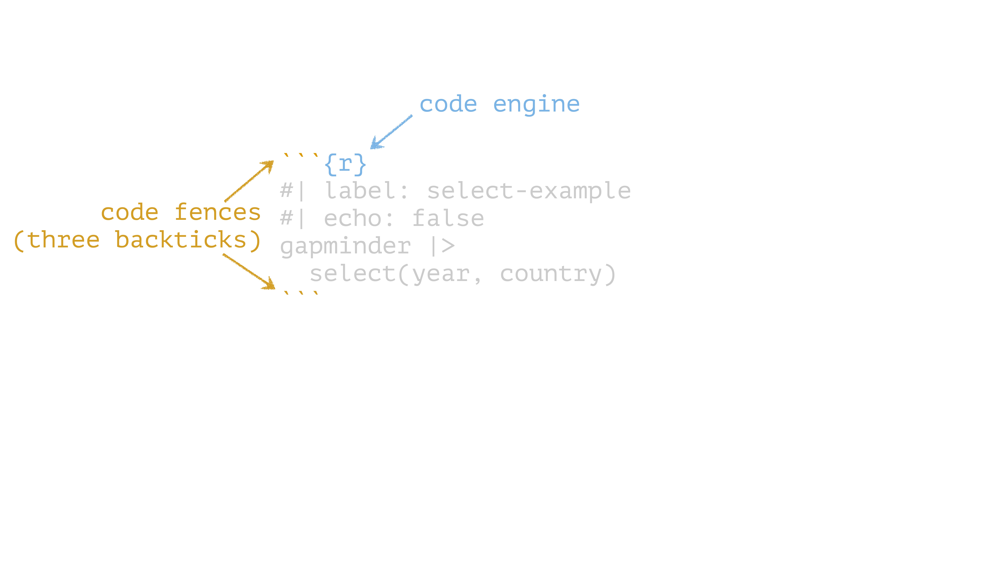
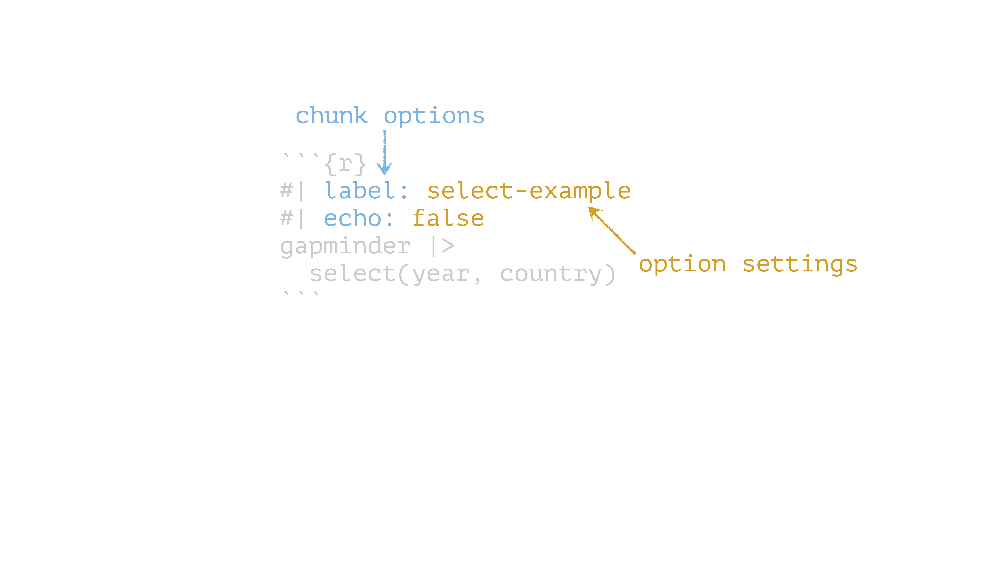
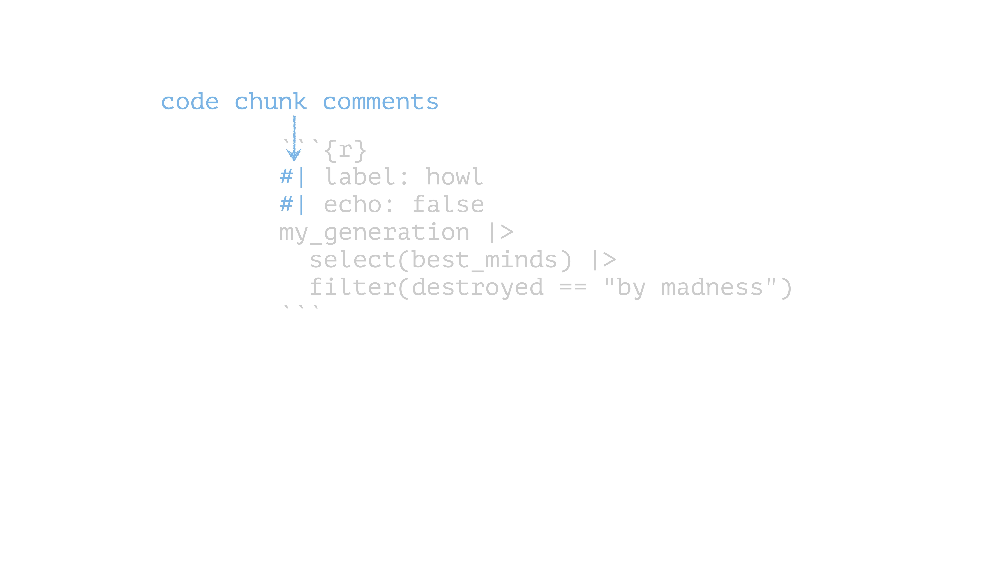
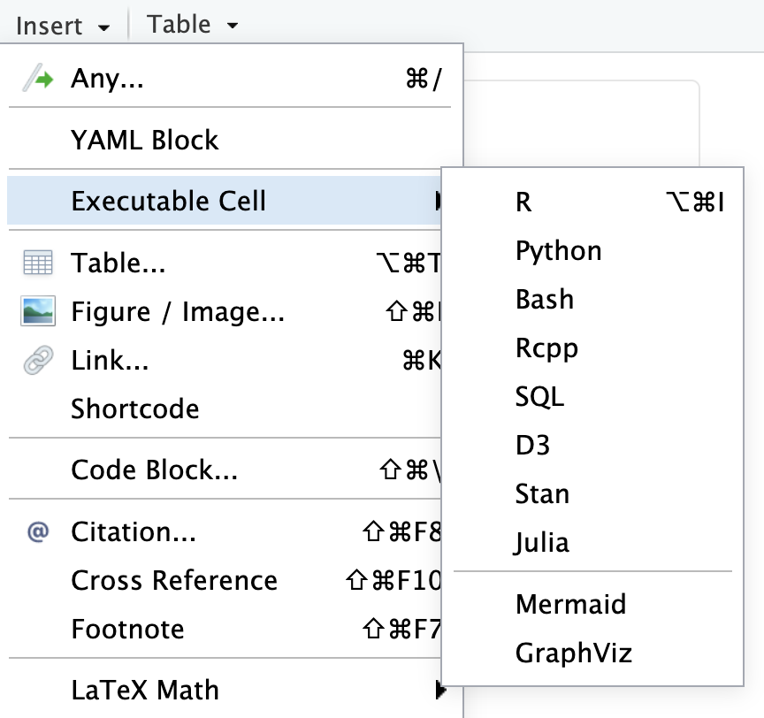
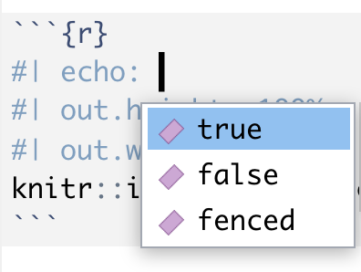
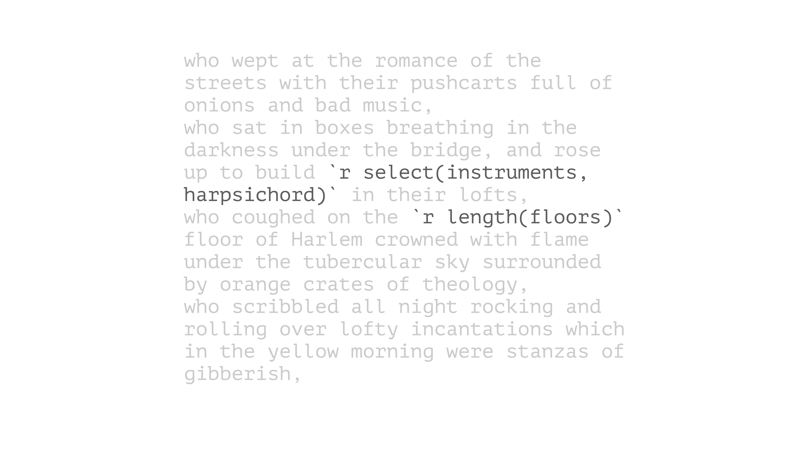
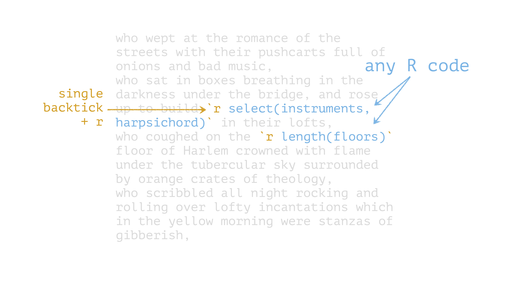

Dynamic documents in R
reproducible research with Quarto
2025-08-09
Artwork from “Hello, Quarto” keynote by Julia Lowndes and Mine Çetinkaya-Rundel, presented at RStudio Conference 2022. Illustrated by Allison Horst.

Quarto

Dynamic: code and text in same document
Reproducible: re-run your analysis, re-render your document
Flexible: output to different formats easily
Rendering

Your Turn 1
Create a new Quarto file. Go to File > New File > Quarto Document. Press OK. Save the file and press the “Render” button.

Quarto

Prose
Code
Metadata
Quarto

Prose = Markdown
Code
Metadata
the Visual Editor

Basic Markdown Syntax
*italic* **bold**
_italic_ __bold__Basic Markdown Syntax
# Header 1
## Header 2
### Header 3
Basic Markdown Syntax
<http://example.com>
[linked phrase](http://example.com)
Learn more about Markdown Syntax with the ten-twenty minute tutorial on markdown at https://commonmark.org/help/tutorial.
Your Turn 2 (open exercises.qmd)
Read this short introduction to the Visual Editor: https://quarto.org/docs/visual-editor/
Use the Visual Editor to stylize the text from the Gapminder website below. Experiment with bolding, italicizing, making lists, etc.
Quarto

Prose
Code = R code chunks
Metadata
Code chunks

Code chunks

Code chunks

Code chunks

Chunk options
| Option | Effect |
|---|---|
include: false |
run the code but don’t print it or results |
eval: false |
don’t evaluate the code |
echo: false |
run the code and output but don’t print code |
message: false |
don’t print messages (e.g. from a function) |
warning: false |
don’t print warnings |
fig.cap: "Figure 1" |
caption output plot with “Figure 1” |
See the Quarto documentation
Other languages
First-class support for Python, Julia, and Observable JS
Supports Jupyter notebooks
Insert code chunks with cmd/ctrl + alt/option + I or Visual Editor

Press tab to autocomplete chunk options


Your Turn 3
Create a code chunk. You can type it in manually, use the keyboard short-cut (Cmd/Ctrl + Option/Alt + I), or use the “Insert” button above. Put the following code in it:
Render the document
Your Turn 4
Add echo: false to the code chunk you created and re-render. What’s the difference in the output?
Inline Code

Inline Code

Your Turn 5
Remove eval: false so that Quarto evaluates the code.
Use summarize() and n_distinct() to get the the number of unique years in gapminder and save the results as n_years.
Use inline code to describe the data set in the text below the code chunk and re-render.
Quarto

Prose
Code
Metadata = YAML
YAML Metadata
Output formats
| Format | Outputs |
|---|---|
html |
HTML |
pdf |
|
word |
Word .docx |
odt |
OpenOffice .odt |
gfm |
GitHub-flavored Markdown |
revealjs |
Reveal Slides (HTML) |
beamer |
Beamer Slides (PDF) |
pptx |
Powerpoint Slides |
Your Turn 6
Set figure chunk options to the code chunk below, such as dpi, fig.width, and fig.height. Run knitr::opts_chunk$get() in the console to see the defaults.
Add your name to the YAML header using author: Your Name.
Change format: html to use the toc: true and code-fold: true options and re-render
Parameters
Your Turn 7
Change the params option in the YAML header to use a different continent. Re-render.
gapminder |>
filter(continent == params$continent) |>
ggplot(aes(x = year, y = lifeExp, group = country, color = country)) +
geom_line(lwd = 1, show.legend = FALSE) +
scale_color_manual(values = country_colors) +
theme_minimal(14) +
theme(strip.text = element_text(size = rel(1.1))) +
ggtitle(paste("Continent:", params$continent))Bibliographies and citations
Bibliography files: .bib, Zotero, others
Citation styles: .csl
[@citation-label]
Visual Editor’s citation wizard can help!
Including bibliography files in YAML
the Visual Editor can also manage this for you.
Your turn 8
Cite Causal Inference in text below. Using the citation wizard, find the right citation under My sources > Bibliography.
Add the American Journal of Epidemiology CSL to the YAML using csl: aje.csl
Re-render
Make cool stuff in Quarto!
- Books
- Blogs
- These slides!
See the Gallery for inspiration